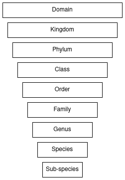

Bolstering Wildlife Classification using Spatiotemporal Metadata
Introduction
The global extent of social media, camera traps, and citizen science has the potential to provide a real-time global wildlife overview reaching to the furthest corners of the globe.
Automated wildlife classification is essential within ecological studies, wildlife conservation and management, specifically fulfilling the roles of species population estimates, individual identification, and behavioural patterns. However, due to the harsh environments, variable image quality, and long-tail data distribution, traditional wildlife classification methods struggle to achieve top performance.
Existing studies have successfully used metadata to boost the performance of image classification. Additionally, the taxonomic structure of metadata falls into the cascading classifier domain. The findings of previous studies, lead to the investigation of how taxonomic levels influence the performance of metadata and image classification models. Further, how can the determined trends be leveraged within a novel cascading ensemble classifier utilizing both metadata and image classification components to improve upon traditional methods.

The proposed research questions include:
- How does taxonomic level influence the performance of metadata classification?
- How does taxonomic level influence the performance of image classification?
- How does the novel cascading ensemble method improve upon baseline classifiers?
The novel contributions of this study include:
- The collection and generation of a new dataset containing both labelled images and accurate metadata.
- A study of metadata based models through the taxonomic levels.
- A novel taxonomic tree structured cascading ensemble classifier.
Dataset
For a comprehensive breakdown of the dataset including taxonomic observation and image counts, please review Dataset
Novel Cascading Ensemble Classifier
For a comprehensive breakdown of the novel cascading ensemble classifier, please review Cascading Ensemble Classifier
Results
For a comprehensive breakdown of each experiment, the results, and the final discussion, please review Results